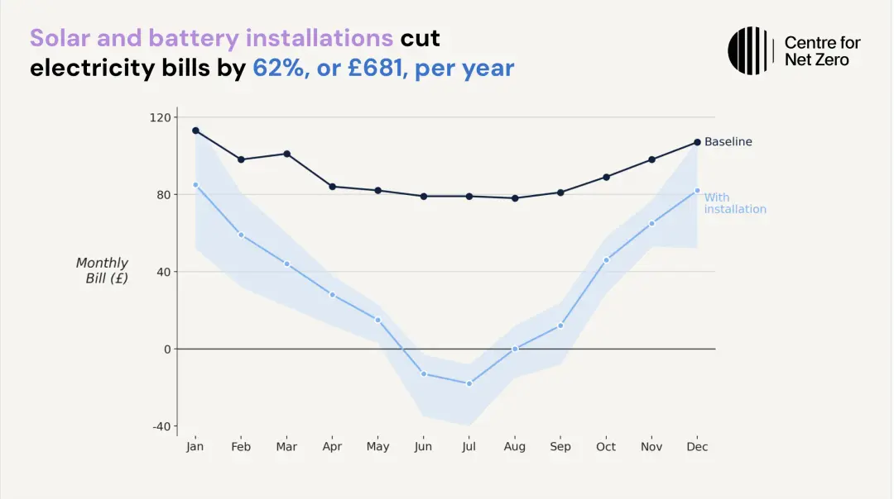

The Impact of Solar and Battery on Energy Demand
Abstract
Rooftop solar and home batteries are widely proposed as a way to cut household energy bills and decarbonize the power sector, yet we lack causal evidence on their benefits to households, the grid, and society. We conducted a natural field experiment, randomly contacting low-income households from an eligible pool of 38,821 and offering them solar and battery at no private cost. Within a fixed budget constraint, we randomly installed systems in 708 households. Installations reduced annual imported electricity by 38% and net grid imports by 77%, translating into a 62% reduction in bill spending. Solar-plus-battery installations reshaped intraday consumption profiles to benefit the grid and the environment. Overnight off-peak imports increased, while peak imports fell by 66%, a pattern that held even in low-solar winter months. The first pound of subsidy had a marginal value of public funds of 2.07. Exploiting variation in battery feasibility, batteries accounted for a further 13% reduction in households’ annual bill. For supporting the grid, solar-plus-battery households were able to decrease evening peak imports by three times the amount achieved by solar alone.